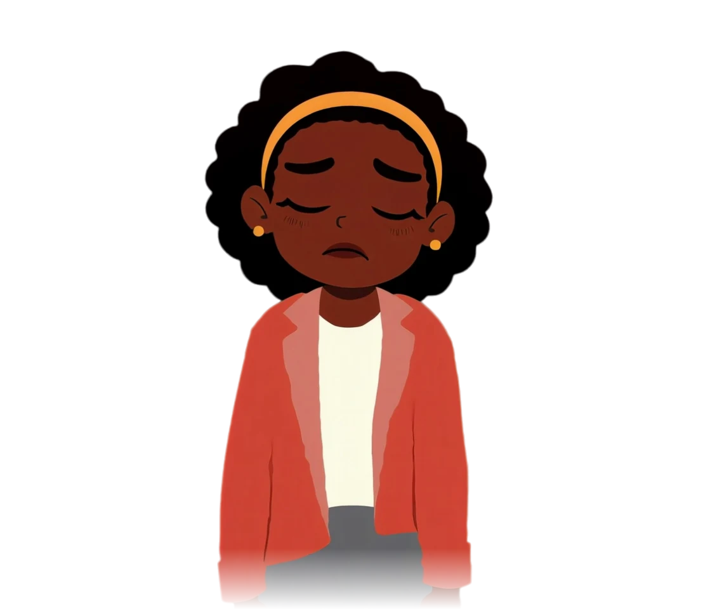

local_fire_department7 DAY STREAK
translateGERUND DRILL

"I like listen to music."
Acancel
listenBare infinitive
arrow_downwardYour answer
Bcheck_circle
listeningGerund (Verb + -ing)
checkCorrect choice
C
to listeningDouble marker
D
listenedPast tense
close
Not quiteCorrect answer: listening
AMA · YOUR TEACHER
listening/ˈlɪs.ən.ɪŋ/
the act of paying attention to sound